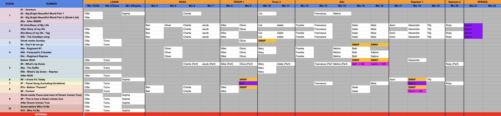

Shrek: the Musical - UCL Musical Theatre Society
Role: Sound Designer/No. 1
November 28-30, Bloomsbury Theatre
Production Photography and Filming by Webbe Chu.
Jump to Selected Recordings

Overview
Shrek: The Musical was produced by UCL Musical Theatre Society as a full-scale staged musical with a large ensemble cast and live pit orchestra.
As Sound Designer and No. 1, I was responsible for the design and operation of the audio system, including radio microphone deployment, band reinforcement, hires, training, and live show mixing.

Technical Details
Console
- DiGiCo SD9
Band
- 24 Piece Orchestra
- 9 Monitor Mixes for Musicians and Actors
Radio Microphones
- Designed mic plot and managed RF coordination, ensuring compliance with licensing regulations
- 22 Radio Mics shared amongst a cast of 28


Show Recordings
